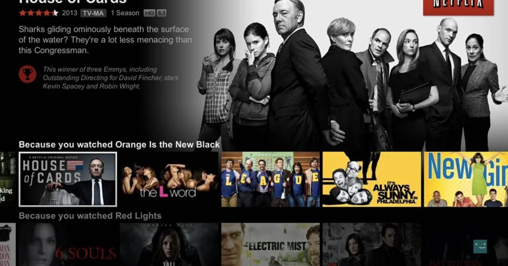
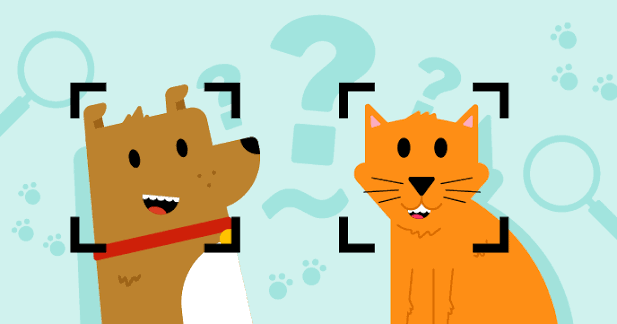

Data Analyst
Transforming raw data into meaningful insights, dashboards and reports.
Hello, I’m
I build data-driven solutions using machine learning, deep learning and business intelligence—turning complex datasets into clear decisions and useful products.
Transforming raw data into meaningful insights, dashboards and reports.
Building predictive models and statistical solutions for complex problems.
Designing and deploying scalable ML systems and AI applications.
About Me
AI & Data Science professional with hands-on experience in Python, SQL, Power BI, data cleaning, exploratory analysis, machine learning and Streamlit application development.
I focus on building practical, explainable solutions—from raw data and feature engineering to model evaluation, visualisation and deployment.
Semantic search, RAG, predictive modelling, recommendation systems, computer vision, dashboards and business insight generation.
Technical Skills
Pandas, NumPy, Matplotlib, data pipelines and application logic.
Joins, subqueries, aggregation, database analysis and reporting.
Regression, classification, clustering, evaluation and tuning.
CNNs, RNNs, TensorFlow, Keras and image classification.
DAX, KPIs, interactive dashboards, bookmarks and storytelling.
Professional ML applications, interfaces and cloud deployment.
Featured Projects
Research paper intelligence with semantic search, RAG Q&A, summarisation, translation, citations, visualisation and voice assistance.

Content segmentation and recommendations using K-Means clustering, feature scaling and an interactive Streamlit interface.
Predictive pricing application using travel features, preprocessing, regression modelling and a user-friendly Streamlit interface.
Cryptocurrency trend analysis and prediction using feature engineering, ML models and an interactive market dashboard.
Healthcare data analysis identifying service gaps, city-level distribution and doctor availability through dashboards and maps.

CNN-based image classification application built with TensorFlow and Keras for real-time cat and dog predictions.
Journey
University of Calicut — analytical reasoning, statistics and scientific problem solving.
IQJITA Innovative LLP — Python, SQL, Power BI, machine learning, deep learning and deployment.
Conducted practical Excel sessions for HR and Office Administration students.
Recognised in October 2025 and May 2026 for consistent performance and contribution.
Let’s work together
I’m open to Data Analyst, Data Scientist, ML Engineer and AI development opportunities.